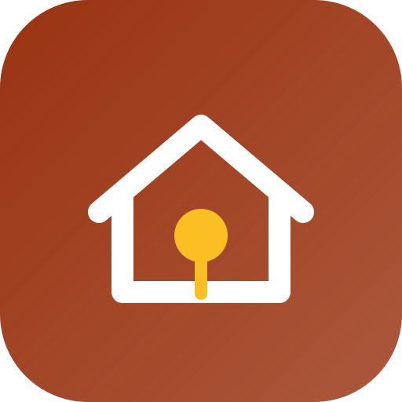

Ocupações IrregularesTodos os projetos →Um levantamento feito com a própria cidade para responder o que hoje ninguém sabe: quantas ocupações existem, quantas famílias vivem nelas, quais estão precárias — e o que o poder público pode fazer.
Abrir a planilhaSlides de defesaCadastre cada ocupação e edite direto na célula. O índice de precariedade é calculado sozinho.
Marque onde cada ocupação fica num croqui esquemático — sem expor o endereço exato das famílias.
Quanta água, esgoto, pavimento e transporte faltam, e o que o poder público faz hoje.
Um rascunho de ofício gerado a partir do levantamento, pronto para revisar e enviar.
Orientação: Prof. Heitor